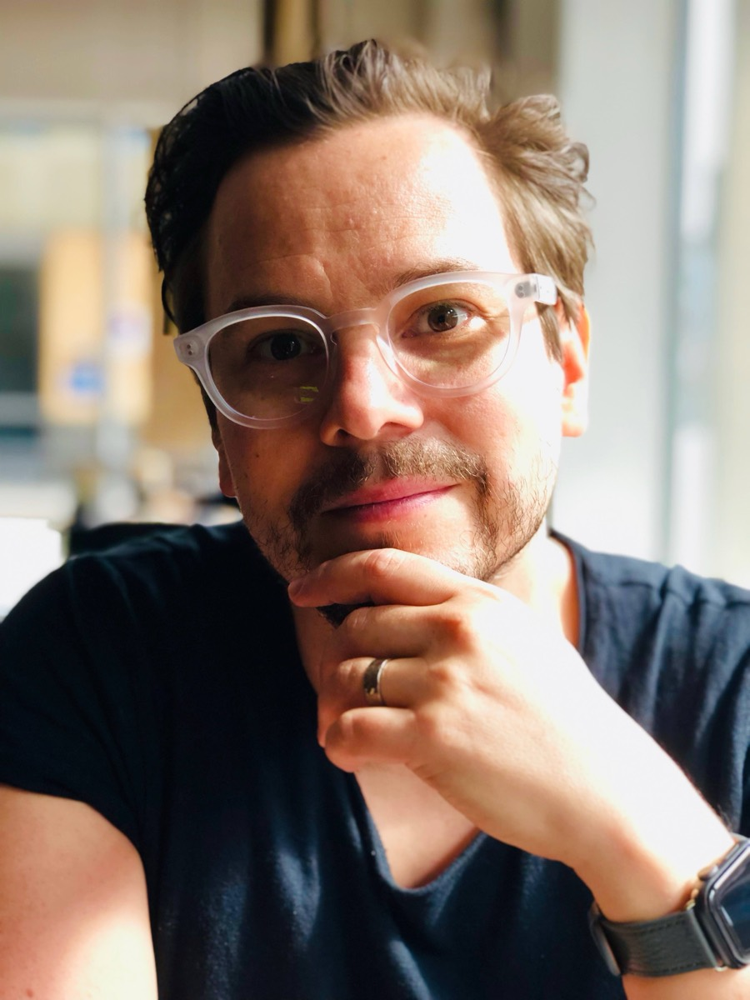

- Role
- Assistant Professor in Arts Education; group coordinator
- Institution
- Aalto University, the School of Arts, Design and Architecture, Department of Art and Design
- Research interests
- Post-digital, post-AI art, education and culture; embodied and experiential learning; critical digital literacy; visual culture; philosophies of art, craft, and education
Tomi Slotte Dufva coordinates the group and researches art, education, culture, and technology through post-digital and post-AI perspectives, with attention to embodiment, experience, critical literacy, visual culture, and philosophies of art, craft, and education.